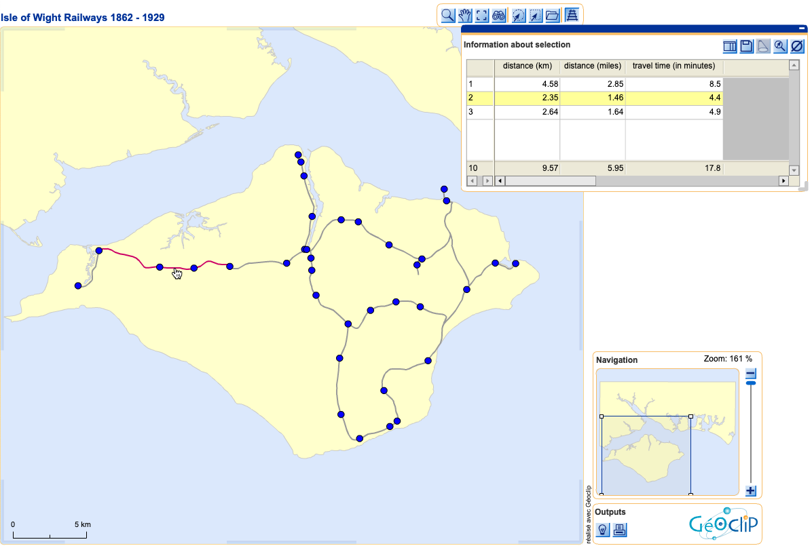

This map contains information about the railways on the Isle of Wight, constructed from 1862 onwards. A historical Bartholomew's map was used as a base for digitising. All stations are shown as they were until 1929, including the site of Newport Pan Lane station, which was only in existence for four years.
Unfortunately this map is currently unavailable.
This map - as well as that of Posen - was built using GeoClip Solo, which was a useful piece of flash map generator software (now discontinued).
Line segments between the stations are shown with mileage, distance in kilometres and travel time in minutes. You are able to add up travel times and distances by multiple selection of the line segments (point, <SHIFT> and click). Clicking on the station points triggers a popup window. Although GeoClip had some issues with local image files, the external URLs seem to work.
© 2006